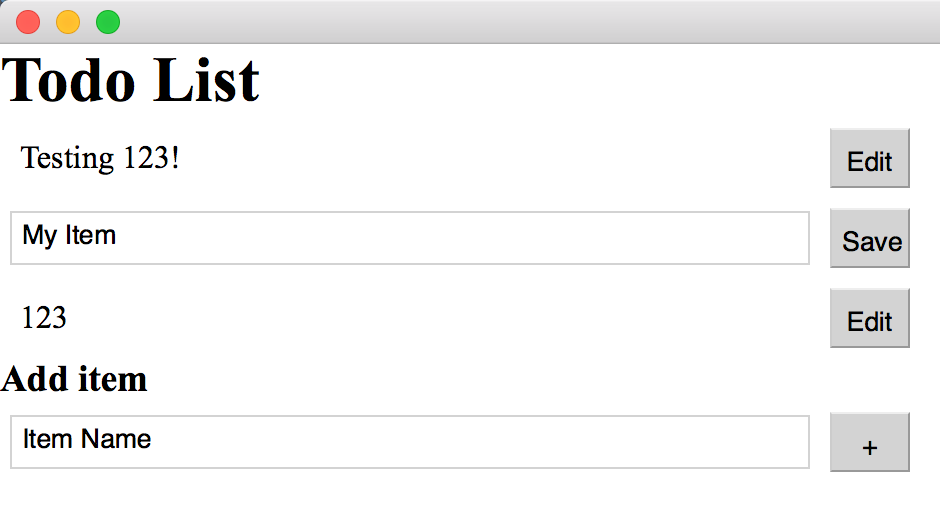
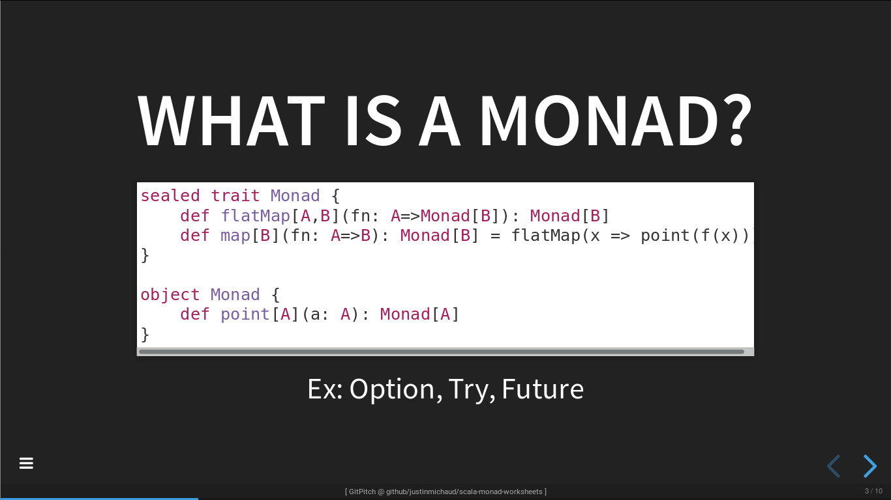

I am a Computer Science student at the University of Waterloo in Canada, interested in Free & Open Source software, browsers and emulation. In my free time, I play oboe and collect old computers. You can contact me at hello@justinmichaud.com

GlideN64
I made a demo adding stereoscopic rendering support to GlideN64 Nintendo 64 graphics plugin. Every draw call that the game makes to the high-level emulation code is doubled. Then, after the game applies its projection matrix to vertices, the eye translation is applied. This avoids toe-in artifacts, but causes depth issues. It is not compatible with low-level emulation, and is too unstable to be merged. Source

AnySoftKeyboard
I contributed a gesture typing implementation to the popular AnySoftKeyboard project. It works by generating simulated paths for words, then comparing them to the input path. There is still a lot of work to be done to improve accuracy, usability, performance and memory usage, since all of the matching is done after the entire gesture is complete. Source

NES Emulator
I made an NES emulator to learn rust. It has partial support for Mapper 4 (SMB2 and SMB3) and audio. An old version also includes optional modifications to Super Mario Bros by hooking into memory reads/writes, allowing new levels to be loaded in and out. Source Source (old version) Play Now (old version with game modifications)

Rust Gui Framework Demo
A demo of the servo browser engine supporting native rust event handlers. The goal is to be like electron, but using native rust + servo instead of javascript + blink. Source

VR Head Tracking Shooter
A shooter game for Google Cardboard that uses BoofCV to track the position of your head, allowing you to doge obstacles and shoot enemies. Using Bluetooth, a TCP connection allowed head tracking data to be sent to the android phone in the headset. Built using OpenGL and LibGDX for Mhacks 8. Source

What is a monad? (Lightning talk)
Lightning talk + Scala worksheets about Future, Try, and Option monads, plus some bonus worksheets on the IO monad and monad transformers. I gave this while interning at PagerDuty so that I could wrap my head around Monads. Source

Rust Raytracer
A small ray tracer built to try Rust. Basic reflection, refraction and shading are implemented, as well as simple perturbation to simulate surface roughness. The code is a mess, but this was my first Rust project. Source

Remote Support
An open-source remote support tool using Java and UDP hole-punching, developed to provide quick and simple ssh access through a NAT without port forwarding. It used Netty and UTP, a reliable protocol build on UDP, to tunnel multiple tcp connections with a small discovery server to handle NAT traversal. It barely works, but it was a very interesting learning experience. Source
Sudbury Transit
A small, Open Source Android transit application using the Sudbury Open Data API, available on F-Droid. It allowed me to contribute to Open Source and my community, and to gain familiarity with the OpenStreetMap api. Source